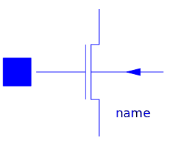

An inverter is an electrical circuit that consists of a PMOS and a NMOS. Its task is to turn the input voltage from high potential to low potential or the other way round. This circuit InverterExtendedModel contains two inverters. The input voltage of the first inverter is nearly equal to the output voltage of the second inverter. Capacities cause some differences.
To see the typical behavior of the circuit the input voltages and the output voltages should be plotted. Besides that it can be interesting to watch the output voltage of the first inverter. Simulated until t=5s.
Input voltages: vin.p.v and v.p.v
Output voltage of the first inverter: mn1.ND.v
Output voltage of the second Inverter: mn2.ND.v
This example shows one possibility to make the record of the technology parameters available for more than one transistor. For each set of technology parameters an apart model has to be defined (in this example: MPmos ans MNmos). Inside the model definition the technology parameters are appointed (Spice3.Semiconductors.modelcardMOS M(GAMMA=0.37, LAMBDA=0.02)). Every model extends a transistor. In this process the required technologieparameters are specified (extends Spice3.Repository.MOS(final mtype=1, modelcard=M). To make transistors available in the circuit instances of the defined models are applied (MPmos mp1; MNmos mn1; MPmos mp2; MNmos mn2;).
| Name | Description |
|---|---|
| MPmos | PMOS transistor with specified modelcard |
|  MNmos | NMOS transistor with specified modelcard |